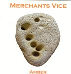

Home Artist links Label link

Merchants Vice - Amber
| Artist: | Merchants Vice |
| Title: | Amber |
| Label: | Iceshop Records MV CD 01 |
| Length(s): | 64 minutes |
| Year(s) of release: | 2003 |
| Month of review: | [11/2003] |
Line up
Les Wardle - vocals, backing vocals
Nick Martin - guitars, backing vocals
Mark English - keyboards
Paul Brown - bass
Chas Allen - drums
Tracks
| 1) | Reason To Change | 7.30
|
| 2) | Storyteller | 7.09
|
| 3) | Glass Child | 6.47
|
| 4) | Intoxicated | 11.46
|
| 5) | The Hollow Man | 9.05
|
| 6) | End Of Story | 6.06
|
| 7) | Dark Before The Dawn | 2.49
|
| 8) | All Our Lives | 12.27
|
Summary
This is Merchants Vice's first full fledge release.
The music
The band create a sound that could be described as neo prog, fitting in nicely with the material released by a label as Cyclops, even though opener Reason To Change initially sounds like a slower played King Crimson. Some sections sound a little more complicated then your basic neo, or more technical, for instance The Hollow Man (which also seems to quote Led Zep's Kashmir). The record has the sound of a debut, compositions being a bit halting, not flowing as much as one might wish. Merchants Vice could be compared with the Swedish Fruitcake, except that their compositions do not sound like they were constructed from building blocks. The vocals have potential, but sound a bit shaky sometimes. The drums sound as uninspired as the guitars sound wavering at times. Effects such as these seem to increase as the record moves along, the initial tracks still sounding quite secure.
The long track Intoxicated has some nice synth bits, Mark Kelly like, with a nice ring to them, and good support from the other instruments. End Of Story has some good guitar bits. Closer All Our Lives has some surprisingly strong guitars, when the track starts speeding up, but drags out too much.
Conclusion
Amber is a listenable record. Not that that sounds all that enticing, but that's pretty much the way it is. Merchants Vice show some promise on this album, which has some good sections. Having said that, the instruments are not played fluently enough in general, and the compositions lack flow. Fluency sounds like it may be attained in the near future, but drum parts really need to show more challenge. The compositions also lack the diversity or tension necessary to span an hour. Now listening becomes more taxing as the record continues, while the first couple of tracks sound decent. This band may have a chance at making a good album in the future. They haven't done so yet.
© Roberto Lambooy